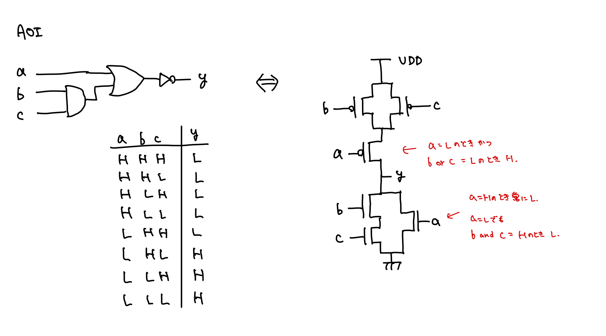

note.momee.mt
- Mutsuha Asadaのノート
- note.momee.mtのリポジトリ
- X: @mutsuha_asada
- GitHub: @momeemt
nixpkgs レビューログ
NixOS/nixpkgsのレビュー時に見逃していた・気を付けるべき点について記録しておく。
習慣
- できるだけ起床してから30〜60分間はnixpkgsへのレビューに充てる
- 朝の方が当日中に他のレビュワーやコントリビュータからの返信に対応しやすい
-
バージョン更新だけなど、レビューしやすいPRは作業の合間に取り組みたい...
- まだ
nixpkgs-reviewが実行されていないPRに対して自動で実行しておくツールが欲しい
- まだ
- 過去にレビューしたPRの更新や、レビュワーから指摘にはできるだけ優先的に対応する
- これが苦手なのが課題
一般
- Approveしてから他のレビュワーによって改善点が指摘された場合にはメモしておく
- Request Changesを送ってからマージされるまではTodoistに入れて確認するようにする
- Approveしてからコミッタにマージされない場合はNixOS Discourseのprs-ready-for-reviewに投稿する
- Request Changesを送る際にはできるだけ丁寧に改善点について説明する
ログ
2025/06/10
2025/06/09
- ocamlPackages.kcas: 0.6.1 -> 0.7.0
- ocamlPackages.{landmarks, landmarks-ppx}: 1.4 -> 1.5
-
ocamlPackages.mmap: 1.1.0 -> 1.2.0
useDune2は古いので削除
2025/06/08
2025/06/07
- ocamlPackages.mirage-crypto: 1.2.0 -> 2.0.1
- ocamlPackages.awa: 0.5.1 -> 0.5.2
- ocamlPackages.benchmark: 1.6 -> 1.7
- ocamlPackages.bitwuzla-cxx: 0.6.1 -> 0.8.0
- ocamlPackages.cow: 2.4.0 -> 2.5.0
- ocamlPackages.directories: 0.5 -> 0.6
2025/06/06
2025/06/05
-
ocamlPackages.lua-ml: 0.9.2 -> 0.9.4
odocはドキュメント生成のみに必要（with-doc）なので、buildPhaseには必要ないことがある
2025/06/04
-
ocamlPackages.wasm: 2.0.1 -> 2.0.2
- opamパッケージとしてビルドされているが、upstreamがduneプロジェクトの場合には
buildDunePackageを用いて書き直した方が良い
- opamパッケージとしてビルドされているが、upstreamがduneプロジェクトの場合には
-
ocamlPackages.ffmpeg: 1.2.1 -> 1.2.5
meta.changelogは、テキスト形式の方が扱いやすいので、https://raw.githubusercontent.com/で指定した方が良い
-
ocamlPackages.xenstore: 2.3.0 -> 2.4.0 (draft)
- xenstore-toolがバージョンアップによって消されたAPIを使っていて、かつ報告場所がないので困っている、という旨のコメントをOCamlパッケージをメンテナンスしてる方に投げてみた
- 30分くらいのつもりだったけど2時間経っていた
- SATySFi
- satysfiDirs.ml
- ここで~/.opam/
配下のパッケージパスを特定している SATYSFI_RUNTIMEを書き換えると出力先を選べる- Pythonスクリプト不要かも。satyrographosに処理を委譲できそう
NixOSでフォントが読み込めないとき
fc-cache -rv
詳細
uguisu側で修正したnix-configurationsをoshidori側で反映させたらAlacrittyがnerd-fontsを読み込めないと怒ってきた。実際にnvim-treeのアイコンが表示されなくなっていた。
nix-community/home-manager #6160を読んだら解決した。
どうやらhome-manager switchだけではフォントのリロードが行われないよう。
含意
ならば のような論理式を含意といい、 と表現する。 これは、 が正しいとき、 もまた正しいならば正しいことを意味する。
解釈
含意演算子は以下のように評価される。
| 1 | 1 | 1 |
| 1 | 0 | 0 |
| 0 | 1 | 1 |
| 0 | 0 | 1 |
が正しくなければ常に が正しいことの導出
次の2つを用いることで、 が正しくなければ常に が正しいことを導出できる。
- が無条件に正しければ、 の正否に関わらず は正しい
- 対偶
まず、 が正しくないとする。 それは が正しいことを意味する。 (1)より の正否に関わらず は正しい。 これの対偶を考えると、 も正しい。 したがって、 が正しくなければ常に は正しい。
集合論
参考資料
- ✅ 筑波大学 GA15121 情報数学A
- 指定教科書: 論理と集合から始める数学の基礎
- 集合・位相入門
- 2025/06/27〜
- きちんとした数学書を読むのは初めてなので、竹内先生の数学書の読み方についてを参考にしている
集合
範囲のはっきりしたものの集まりを集合という。 集合は普通、ラテン大文字で表される。 幾何学的表現を用いて、集合を空間、その元を点と呼ぶこともある。
元
が1つの集合であるとき、 に含まれる個々のものを の元（元素、要素とも）という。 もの が集合 の元であることを、、あるいは で表す。 このことを、 が に属する、 は に含まれる、 は を含むなどという。
の否定は、、または で表す。
と はいずれか一方だけが成り立ち、両方同時に成り立つことや、両方同時に成り立たないことはない。
無限に多くの元を持つ集合を無限集合、有限個の元しか持たない集合を有限集合という。 また固有名詞的に、自然数全体の集合を 、整数全体の集合を 、有利数全体の集合を 、実数全体の集合を で表す。
が集合であるとき、どんなもの を取ってきても であるか であるかは定まっているが、その判定問題が容易に解けるかどうかはまた別問題。
変数と条件
考察の対象となるものを代表的に表す文字を変数という。 変数が表す対象は任意で、数値だけではない。
また、変数を含む文章をその変数についての条件または性質という。 条件 が変数 についての条件であることを明示したいとき、 と表す。 ある具体的なもの を に代入して得られる文章 が正しいとき、 は条件 を満たす、または は性質 をもつ、という。 条件 を満たすようなもの全体は1つの集合を形成する。
記法
一般に、元 より成る集合を以下のように表す。 これを外延的記法という。
ただし、この記法はすべての元を列挙するか、簡単に 部分が推測できるような集合でなければならない。 そこで、ある条件を満たすもの全体の集合、ある性質を満たすもの全体の集合を表現できる、内包的記法を用いる。 条件 を満たすようなもの全体の集合を、次のように表す。
たとえば、 を両端とする の閉区間は 、開区間は である。
空集合
元を全く含まない集合を空集合という。 空集合は 、あるいは外延的記法では と表す。 たとえば、 は空集合。
空集合 は元を含まないから、 である。
相等
集合 は、全く同じ元から成るとき、すなわち以下が成り立つときに等しいという。 これを、 と表す。
同等
2つの文章 が与えられたとき、 とは、 が正しいときに もまた正しいことを示す。 また、 も成り立つとき、 と表せて、 と は（論理的に）同等であるという。
部分集合
集合 において、以下を満たすならば は の部分集合であるといい、 または と表す。 これを、 は に含まれる、 は を含むという。
その否定は、、または と表される。
であるとき、 は の真部分集合であるという。
であるための必要十分条件は、 が成り立つことである。 もし2つの集合が同等であることを証明したければ、両向きに部分集合であることを示す。
が成り立つことも明らか。
空集合と部分集合
空集合 は任意の集合 の部分集合である。
これは、含意を用いて証明できる。 を示すためには、 を示す必要がある。 ここで、 であるから、常に正しい。 したがって、元の式は正しい。
和集合
記号 は結び、join、cupなどと呼ばれる。 たとえば、 を正の偶数全体の集合、 を正の奇数全体の集合とすると、。
基本的な性質
包含関係
とする。 Definition 4.2.1.1 (和集合) から、 を満たす。 が正しいから、Definition 4.1.1 (部分集合) より、 が示された。
同様に、 から が従い、。
上位集合閉包
とする。 Definition 4.2.1.1 (和集合) から、 または が従う。 のとき、 から を満たす。 同様に、 のとき、 を満たす。 が正しいから、Definition 4.1.1 (部分集合) より、 が示された。
Proposition 4.2.1.1 (和集合の包含関係) より、 は と をどちらも含む。 また、Proposition 4.2.1.2 (和集合の上位集合閉包) より、 も も含む任意の集合は、 を含む。 したがって、 は、 の両方を含む最小の集合であると言える。
冪等律
とする。 Definition 4.2.1.1 (和集合) より、 または が従う。 よって、 から、。 また、 から、。 したがって、。
交換律
結合律
とおく。 Definition 4.2.1.1 (和集合)より、 または が従う。
または または
または
よって、 が示せた。
同様に、 とおくと、 が従うから、 が示せた。
したがって、 が示された。
結合律の一般化
自分で書いた証明は証明になっていなかったのでチャッピーに教えてもらった。 仮定を適用できる範囲が自分が思っていたより広かった。
任意の括弧の付け方をした式 は、常に集合 に等しいと仮定する。
任意の括弧付き表現 は の下で、必ず と を用いて、次のように表せる。
仮定より、 と が成立するから、 Proposition 4.2.1.5 (和集合の結合律)より、 は括弧の付け方によらず結果は同じ集合となる。
したがって、Proposition 4.2.1.6 (和集合の結合律の一般化)は数学的帰納法よりすべての で成り立つ。
結合律の一般化が成り立つので、括弧を省略して次のように表してよい。
包含と和集合の同値命題
ならば、 かつ であるから、 Proposition 4.2.1.2 (和集合の上位集合閉包)より、。 また、Proposition 4.2.1.1 (和集合の包含関係)より、。 よって、 が成り立つ。
また、 ならば、Proposition 4.2.1.1 (和集合の包含関係)より、 であるから、。 よって、 が成り立つ。
したがって、Proposition 4.2.1.7 (包含と和集合の同値命題)は示された。
単調性
Proposition 4.2.1.7 (包含と和集合の同値命題)より、。 また、 ならば、Proposition 4.2.1.1 (和集合の包含関係)より、。 Proposition 4.2.1.5 (和集合の結合律)より、。
したがって、 が示された。
チャッピーがもっと賢い証明を教えてくれた。 自分が書いた証明は嘘ではないけど冗長っぽい。
Proposition 4.2.1.1 (和集合の包含関係)から、。 また仮定から、。
Proposition 4.2.1.2 (和集合の上位集合閉包)より、 となり、示された。
かしこ！全く思いつかなかった。
恒等律
Proposition 4.2.1.5 (和集合の結合律)より、示したい命題を に同値変形する。 また、Proposition 4.2.1.3 (和集合の冪等律)より、。 よって、示したい命題は に同値変形できるが、これは自明。
したがって、 を示せた。
教科書を読んでいたら Proposition 4.2.1.7 (包含と和集合の同値命題)を使っても示せることが書かれていた。 結構感動した。
任意の集合 に対して、 であるから、 Proposition 4.2.1.7 (包含と和集合の同値命題)より、。 よって示された。
共通部分
記号 は交わり、meet、capなどと呼ばれる。 たとえば、 を正の偶数全体の集合、 を正の奇数全体の集合とすると、。
一般に、 である時には、 は交わるという。 また、 である時には、 は交わらない、または互いに素であるという。
基本的な性質
包含関係
任意に を取る。 Definition 4.2.2.1 (共通部分)より、 かつ 。
よって、 より、 また、 より、。
上位集合閉包
任意に を取る。 Definition 4.2.2.1 (共通部分)より、 かつ 。 また、前提より から、。 したがって、 が示された。
ここから、 は、 の両方に含まれる集合のうちで最大のものであることが言える。
冪等律
任意に を取る。 Definition 4.2.2.1 (共通部分)より、 かつ 、すなわち。 よって を満たすから、 が示された。
次に、任意に を取る。 を示すために、 を示したい。 ここで、 は であるから、自明に示される。
したがって、Proposition 4.2.2.3 (共通部分の冪等律)は示された。
交換律
任意に をとる。 Definition 4.2.2.1 (共通部分)より、 かつ 。 を満たすなら だが、これは自明。
同様に、任意に をとる。 Definition 4.2.2.1 (共通部分)より、 かつ 。 を満たすなら だが、これも自明。
したがって、 は示された。
結合律
任意に をとる。 Definition 4.2.2.1 (共通部分)より、以下のように変形できる。
よって、 を満たすから、 が正しい。
同様に、任意に を取ると、 に変形できる。 よって、 を満たすから、 が正しい。
したがって、 が示された。
Proposition 4.2.1.6 (和集合の結合律の一般化)の証明と同様に、共通部分のどこにどのような順序で括弧をつけても結果的に得られる集合は変わらない。 したがって、以下のように書ける。
包含と共通集合の同値命題
線形代数
参考資料
- ✅ 筑波大学 GA15221 線形代数A
- 2022年春BCに履修
- ✅ 筑波大学 GB10244 線形代数B
- 2023年春ABに履修
- 筑波大学 GB22501 情報線形代数
- 数研講座シリーズ 大学教養 線形代数
- チャート式シリーズ 大学教養 線形代数
- 基礎数理講座 線形代数汎論
グラム・シュミットの直交化法
本の線型独立なベクトル から正規直交基底を作る手法。
基底 を計算する
基底 を計算する
まず、直交化により を計算する。
次に、正規化して を得る。
スペクトル分類
任意の正規行列 は、固有値 と、固有値 の固有空間への射影行列 を用いて次のように分解できる。
確率論
参考資料
- 筑波大学 GB11601 確率論
- プログラミングのための確率統計
- 正直、確率統計をそれぞれ講義で勉強した後に読むものではないと思う
- 冗長な表現が多くてきちんと知りたい時にはもっと適した本がありそう
- でも、情報科学をやる上で確率論を学ぶモチベーションを知ることはできるから、入学前くらいで読むのは良さそう
- IT Text 確率統計学
統計学
参考資料
記述統計
統計データ
分類
データは、質的データと量的データに二分できる。 質的データはカテゴリカルなデータで、量的データは数値として表されるため定量的に大きさを測ることができるデータ。
量的データは、連続的な値を取る計量値と離散的な値を取る計数値に分類できる。
尺度
名義尺度
質的データのうち、性別や学籍番号など、値の大小に本質的な意味を持たない、ラベルとしてのデータ。
順序尺度
質的データのうち、成績などの数値の大小に意味を持つが、数値間の差や比に意味を持たないデータ。
間隔尺度
量的データのうち、気温や偏差値など数値の大小に意味を持ち、数値間の差にも意味を持つデータ。
比率尺度
量的データのうち、身長や体重などのように、数値の大小、差、比、全てに意味を持つデータ。
0（原点）が何もないことを意味していれば比率尺度、そうでなければ間隔尺度のように見分けることができる。
多次元データ
ある学生の身長、のように1つのラベルに対して1つの値だけが与えられているようなデータを1次元データという。 ある学生の身長と体重、のように1つのラベルに対して2つの値が与えられているようなデータを2次元データという。 ある学生の身長、体重、座高のように1つのラベルに対して3つの値が与えられているようなデータを3次元データという。
2次元以上のデータを1次元のデータに対して、多次元データと呼ぶ。
時系列データ
同一の対象の異なった時点での観測値からなるデータを時系列データと呼ぶ。 経済分析や気象学、天文学の現象分析に幅広く利用されている。
クロスセクション・データ
いくつかの異なった対象について調査・実験を行い、観測値を得た場合のデータをクロスセクション・データという。 また、定めた一定範囲の対象に対して時系列データを集めたものをパネル・データという。
度数分布表とヒストグラム
データをある範囲ごとに区切ったとき、その範囲に属する数値の散らばりの様子を度数分布と呼ぶ。 また、それを表にしたものを度数分布表という。 さらに、度数分布表をグラフ化したものをヒストグラムといい、その形状によってデータの分布を直観的に把握することができる。
度数分布表において区切られた各区間を階級、各区間の幅を階級幅、階級のちょうど中央の値を階級を代表する値として階級値、各階級に属するデータ数を度数という。 データの総数に対する度数の割合を相対度数といい、データ数が異なる複数のデータを比較する際に用いられる。 また、度数、相対度数それぞれの累積値を累積度数、累積相対度数と呼ぶ。
ヒストグラムの注目するべき要素
- 中心の位置
- ばらつき具合
- 分布の形
- データにいくつの山ができるのか
- 山が複数できる場合は何かの性質により分離すると単峰型のデータにできることがある
- データを性質ごとに分離することを層別という
- 外れ値
- 大部分のデータからかけ離れたごく少数のデータを外れ値という
- 転記ミスなどの人為的なミスや、重大な異常が潜むことがある
ヒストグラムの作成
- データ測量単位 を明確にし、 個のデータを得る
- データの最大値、最小値をそれぞれ とし、データの範囲 を求める
- を目安に、仮の階級数 を決める
- を目安に、階級幅 を決める
- ただし、 は測量単位の整数倍になるように調整する
- 最も小さい階級の下側境界値を として、ここから ずつ加えていき、各階級の境界値を求める
- このとき、境界値が より大きくなるまで階級を作る
- 階級を元に、データの度数を数え、度数分布表を作成する
- 度数分布表よりヒストグラムを作成する
累積度数のグラフ化
累積度数はヒストグラムと合わせて折れ線グラフで表示すると便利。 同様のグラフを相対度数、相対累積度数にして作成できる。
分析プロセス
統計データの分析における最初の仕事は、分析を行うべき仮説を考えること。 仮説が構築され、分析したい対象が明らかになれば必要なデータが分かる。
必要なデータが元から存在しない場合には、データ獲得を行う必要がある。 この作業は、自然科学の分野では実験、人文社会科学の分野では調査と呼ばれる。 実験や調査の規則や技術については実験計画法、社会調査法と呼ばれる分野がある。
実験や調査により、生のデータである原データを得ることができるが、大規模な実験・調査は費用面や時間面で誰にでもできるわけではない。 行政機関や研究機関、調査会社、第三者の調査結果を利用することも多いが、その場合は原データを獲得できず、何らかの統計処理を施した後の調査結果である統計資料が分析対象の統計データとなる。
分類
あらかじめ統計資料を作成する目的で調査を行い、その結果を集計したものを第一義統計と呼ぶ。 対して、統計資料の作成が目的ではない資料を集計して得た統計資料を第二義統計、業務統計と呼ぶ。
統計資料を加工して作成された統計資料を二次統計、加工統計と呼ぶ。
データ収集の段階では、原データでなく統計資料の場合には、誰が行ったものか、全数調査か標本調査か、誰を対象としたものか、いつの時点のものか、どの地域を対象としたものか、分類の定義はどうなっているかなどの定義に注意する必要がある。
計算理論
参考資料
- ✅ 筑波大学 GB20401 オートマトンと形式言語
- 2023年秋ABに履修した
- 計算理論の基礎 [原著第3版] 1.オートマトンと言語
- 計算理論の基礎 [原著第3版] 2.計算可能性の理論
- 計算理論の基礎 [原著第3版] 3.複雑さの理論
- 計算できるもの、計算できないもの
画像認識
- 画素画像は、次元実数ベクトルと見なすことができる
- 3次元実数ベクトル空間 について、 を張る基底は無限個存在するが、3本の基本ベクトルが最もシンプルな基底
- が1次独立な画像ベクトル で生成されるとき、 が基底ベクトルである
- 3つのベクトルが同一平面上に存在しない
正射影
任意の は、 と一意に表される。 このとき、 に対して を対応させる写像を から への正射影であるといい、 と書く。
また、 を計量ベクトル空間、 を の部分空間とする。 を の正規直交基底とすると、正射影は以下のように書ける。
画像ベクトル空間における正射影は、特徴抽出として極めて重要。 たとえば、 の1次元部分空間 への正射影は、ベクトル から画像成分 のみを抽出することになる。 また、係数 がその成分の強さを意味する。
射影行列
射影行列 （）は、ベクトル を次元部分空間 への正射影ベクトル に写像する。
部分空間 への射影行列を とするとき、 の直交補空間 への正射影を表す射影行列 は以下のようになる。 ただし、行列 は、射影行列 と同じサイズの単位行列。
画像パターン分布の局在性
ある同種の物体の画像パターンは相関を持つので、他次元ベクトル空間の部分空間内に集中している。 このような部分空間を、その物体の固有空間と呼ぶ。
重みが大きい基底ベクトルを主成分ベクトルと呼ぶ。
固有空間の求め方
- 主成分分析（PCA）
- 多変量解析
- カール・ピアソンが1901年に提案
- KL変換
- 信号処理
- Karhunent(1947)、Loeve(1977)
どちらも同値の操作であるが、異なる分野で独立に開発された。
主成分
以下のいずれかの基準で主成分を決める。
- 平均二乗誤差最小基準
- 分散最大基準
平均二乗誤差最小基準
個の画像ベクトルが与えられている。 そのうち、ある画像 のベクトルが とする。 また、ベクトル への正射影ベクトルを とする。 このとき、平均二乗誤差は以下の によって与えられる。
また、第一主成分のベクトルを求めることは、すなわち最適化問題 を解くことである。
さらに、平均二乗誤差最小基準は射影最大基準に同値変形することができる。 これは、二乗誤差 と射影長の二乗 の和は三平方の定理から常に定数（）であり、平均二乗誤差が最小を取るとき、常に射影は最大になるからである。
第一主成分のベクトルを求めることは、すなわち最適化問題 を解くことでもある。
平均二乗誤差最小基準では固有値分解により主成分を計算することができる。
- 主成分を求めたいデータセットから、自己相関行列 を求める
- 自己相関行列は、画像ベクトルを列として並べた行列 を用いて、 と書ける
- 自己相関行列 の固有値と固有ベクトルを求める
- 番目に大きい固有値 に対応する固有ベクトル を第主成分ベクトルとする
- 番目までのベクトルをとった場合の平均二乗誤差は、 で計算できる
- 主成分ベクトルをいくつ求めるかは、固有値から求められる累積寄与率（集中度）によって決定する。寄与率 は以下で与えられる
分散最大基準
- 主成分を求めたいデータセットから、共分散行列 を求める
- の固有値と固有ベクトルを求める
- 番目に大きい固有値 に対応する固有ベクトル を第 主成分ベクトルとする
- ここで、固有値 がその方向の分散に相当する
- 主成分ベクトルをいくつ求めるかは、固有値から求められる累積寄与率（集中度）により決定する
共分散行列は、平均ベクトル を求め、 で求められる。
Sparse PCA
ALOI: Amsterdam Library of Object Imagesに対する主成分分析の結果を観察すると、第一主成分に正規分布が、第二主成分に正規分布の一次微分が、第三主成分に正規分布の二次微分が現れる。 1つ目は平滑化フィルタに、2つ目はエッジ抽出フィルタに、3つ目は輪郭抽出フィルタ（Laplacian Gaussian）に対応し、脳内にもこのような応答をする細胞が存在する。
基底数を制限すると局所性が現れるため、固有空間を得ることができる。 固有空間への正射影は、次のようなメリットがある。
- 情報圧縮
- 少数の基底ベクトルの1次結合で表現できる
- 特徴抽出
- 顔の固有空間への正射影は人間成分の抽出になる
- 画像パターンの可視化
- 動画像パターンセットは高ベクトル空間において多様体を形成する
- 画像復元
- もし一部が欠落した画像でも、事前に欠落していない画像からなる特徴ベクトルに射影すれば、部分空間上の画像の中で最も近い画像を得ることができる
線形判別法
2クラス以上を対象にして、各クラスをできるだけ識別しやすい部分空間を求める手法。 クラス間変動のクラス内変動に対する比 を最大にする1次元軸 を求めることが目標。
全体平均 を用いて、以下のような変換を行う。
- クラス内変動
- クラス間変動
よって、 は以下のように求められる。
クラス間変動を行列として考えると、 クラスのデータ数 、全データの平均ベクトル 、クラスの平均ベクトル を用いて、次のように定義できる。
同様にクラス内変動行列についても、クラス の 番目のデータ 、クラス の平均ベクトル 、 クラスのデータ数 を用いて、次のように定義できる。
マハラノビス距離
1次元
平均 、分散 を用いて、マハラノビス距離 は次のように定義される。
多次元
平均ベクトル 、分散共分散行列 を用いて、 次元正規分布を とする。 マハラノビス距離 は次のように定義される。
ただし、 本の 次元ベクトル の分散共分散行列 は逆行列を持たない。 そこで、行列 の 個の固有値 と、対応する固有ベクトル を用いて、近似的に擬似逆行列 を定義する。
機械学習
種類
- 教師あり学習
- 予測対象が連続値
- 回帰
- 推薦
- 予測対象が離散値
- 分類
- 予測対象が連続値
- 教師なし学習
- 予測対象が連続値
- 次元削減
- 主成分分析
- 予測対象が離散値
- クラスタリング
- 予測対象が連続値
教師付き学習ではデータとラベルを持つ既知事例から、データのみを持つ未知事例のラベルを予測する。
TODO
以下は、勉強中に出てきたがまだ調べていないこと
- 方向統計学（Directional statistics）
- 方角のような通常の実数とは異なる連続性を持つ仕組みのための統計
- コンパクトなリーマン多様体の性質を扱う
- ？
- CMA-ES
- 秋本先生の解説論文
- の係数が何を意味しているかわかると面白い（うえかん談）
- テンソル積
- https://manabitimes.jp/math/1845
平均二乗誤差
実際の目標値 と予測した目標値 の差を誤差という。 誤差 は、次のように計算できる。
ここで、全訓練事例に対する二乗誤差の平均を平均二乗誤差という。 線形モデル における平均二乗誤差 は、次のように計算できる。
平均二乗誤差を最小化するようなモデルが良いモデルであると言える。 したがって、次のような を求めたい。
これは、最急降下法を用いることで求められる。
最急降下法
関数 が微分可能であるとき、 となる を求める手法。
アルゴリズム
- をランダムに初期化する
- を満たすまで繰り返す
傾きがと見做せるまで移動し続けることで最小値を見つける。 の形によっては局所解に収束することがあるので、初期値の値を変えながら複数回試すことで結果が改善することがある。 また、微分を解析的に計算するために絶対値ではなく二乗を使う。
最小二乗法を使わない理由
最小二乗法を使うには、 が解析的に解ける必要がある。 線形モデルでは当然解けるが、多くの機械学習モデルでは解けない。
確率的勾配降下法
SGD: stochastic gradient descent method。
ナイーブな最急降下法は全事例の訓練誤差総和についての勾配を計算するが、計算量はサンプル数についてとなる。 SGDは、ランダムに選んだ1つの事例の訓練誤差について勾配を計算する。
勾配は近似的だが、更新あたりの計算量はサンプル数について。 訓練誤差が単調減少しないなど、最適化の過程は不安定になる。
ミニバッチSGD
全データから比較的少数のデータをランダムに選んだ集合であるミニバッチを作成する。 ランダムに選んだミニバッチの予測誤差について勾配計算を行う。
更新あたりの計算量はミニバッチサイズに比例するが、SGDほど更新過程が不安定ではなくなる。 バッチごとに独立に勾配を計算できるので並列化できるという嬉しさもある。
これらは1ステップあたりの計算量を減らすが、全体として計算量が減ることや計算時間が短くなることを保証するものではない。
線形回帰
単回帰
- 訓練事例
-
- 特徴量
- 観測可能なデータ
-
- 目標値
- 予測対象となるデータ
学習時には、訓練事例から特徴量と目標値の間の線形モデル を求める。 パラメータ は特徴量 と目標値 の関係の強さで、符号が正なら特徴量が大きい値を取るほど目標値も大きくなり、符号が負なら特徴量が小さい値を取るほど目標値は大きくなる。 パラメータ はバイアスと呼ばれ、特徴量がの時の予測値を表す。
その線形モデルを用いて、目標値が不明の特徴量が与えられたときに、その目標値を予測する。
重回帰
- 特徴（独立変数）:
- 目標値（従属変数）:
- 事例: 特徴と目標値の組
- 目的
- 多数の目標値付き事例が与えられた時に、事例から目標値を予測する
重回帰では、複数の特徴量とバイアスから目標値を予測するので、目標値は以下のように計算される。
また、事例を次のように定義すると、
重回帰モデルを次のように表現できる。
データの属性
データはいくつかの属性に分類することができる。 機械学種で扱う際には順序属性やカテゴリカル属性も数値属性に変換する。
数値属性
スカラやベクトルで表現できる属性。 年齢や実行時間。
順序属性
順序関係を持つ属性。 成績評価（A+ > A > B > C > D）など。
順序を保存したスカラ値に変換する。
カテゴリカル属性
順序関係を持たない属性。 血液型など。
1-of-k変換（one-hot encoding）を行う。
たとえば血液型なら、A型は(1, 0, 0, 0)、B型は(0, 1, 0, 0)、O型は(0, 0, 1, 0)、AB型は(0, 0, 0, 1)。
すなわち、属性値がN種類あるとき、 となる。
前処理
機械学習で扱うデータを前処理する方法にはいくつか種類がある。
欠損値
- 欠損値を含むサンプルを除去する
- 欠損値はその特徴の平均値や中間値で補完する
外れ値
- 全体を俯瞰し、極端な外れ値を含むサンプルを除去する
- 測定エラーや入力ミス、例外の可能性があるため
スケーリング
- 各特徴が平均0、標準偏差1になるようにスケーリングする
- 最大値が1、最小値が0になるようにスケーリングする
文書の特徴ベクトル化
Bag-of-words
文書中に含まれる単語について、頻度によらず出現したかどうかのみを特徴とするベクトルをBag-of-wordsという。
TF-IDF
Bag-of-wordsベクトルの出現フラグの代わりに、単語の出現頻度や珍しさを反映した値を持つベクトルをTF-IDFという。 情報検索分野でも頻出。
- N個の文書
- は、番目の文書における語の出現回数
- TF (term freq.)
- 語の文章における出現割合
- IDF (inv. doc. freq.)
- 語の珍しさ
- TF-IDF
- 語の文書における重要さ
画像の特徴ベクトル化
認識対象について、必要な情報を残し、不要な情報を削除する。
輝度値特徴
アピアランスベース画像認識と呼ばれる、画像の見え方をそのまま用いる手法。 (画素 x 画素)次元特徴ベクトルになる。 顔の見え方そのものが必要で、画像の明るさは不要な顔認識などに用いられる。
高次局所自己相関特徴（HLAC）
各画素において、マスクの灰色の箇所と重なる画素値の積を計算し、画面全体に走査してその和を計算する。 画像のサイズに依らず25次元特徴ベクトルとなる。 見え方、色、形状、個数が必要で、物体の位置が不要な物体認識などに用いられる。
凸計画問題
最適化問題において、制約を満たす解を実行可能解、制約を満たす領域を実行可能領域と呼ぶ。 目的関数が凸関数で、実行可能領域が凸集合であるような問題を凸計画問題と呼ぶ。
凸集合・凸関数
集合 が凸集合であるとは、 を満たすことと同値である。 また、関数 が下に凸であるとは、 を満たすことと同値である。
凸関数の具体例
- 線形関数
- アフィン関数
- 正定値行列 について、
- ノルム
- について、
微分可能な凸関数の最適化
解析的に解く
勾配ベクトルが0ベクトルとなるを解析的に求める。
近似的に解く
最急降下法やそれに類する手法により近似解を求める。
凸計画問題の種類
-
が微分可能
- 制約なし
- の微分をにする点が解析的に求まる
- その点が最適解
- 求まらない
- 最急降下法などで近似的に解く
- の微分をにする点が解析的に求まる
- 等式制約
- ラグランジュの未定乗数法
- 不等式制約
- ラグランジュの未定乗数法
- SVM導出などで出てくる
- 制約なし
-
が微分不可能
- 制約なし
- 等式制約
- 不等式制約
多項式回帰
M次多項式回帰モデルによる回帰。
1次元特徴
- 特徴量関数
- 多項式特徴量
- 線形回帰モデル
D次元特徴
あるデータが与えられたときに、次元を上げて複雑にすればするほどにその訓練データを上手く説明することはできるが、overfittingを起こすので、適切な複雑さを選ぶ必要がある。
多項式次元を上げるほど訓練誤差は小さくなり、最終的に0にできる。 しかし、テスト誤差は最初は大きく、次元を上げるごとに徐々に小さくなるが、必要以上に多項式次元を上げると増加する。
回帰における誤差
手持ちのN個のサンプル について、 を与えられたら を返すハッシュ関数は常に二乗誤差が0だが、サンプル以外には対応できないので意味がない。 このようなサンプルに対して過学習したモデルは使えないので、訓練用とテスト用のサンプルに分けて訓練を行う。
訓練誤差
- モデル を明らかにしたい
- 訓練事例 を使って学習させる
- 学習した回帰モデル
- 訓練事例で得た回帰モデルの、訓練事例における誤答率を訓練誤差と呼ぶ
汎化誤差
- データ生成分布
- 知ることができない
- 真のモデル
- こちらも知ることができない
- 学習した回帰モデル
汎化誤差を使えば回帰モデルの性能を調べることができるが、実際にはこれを計算することはできない。 ただし、汎化モデルの上界を証明するような研究は存在し、学習機の性能保証として使える。
テスト誤差
- モデル を明らかにしたい
- テスト事例
- 学習した回帰モデル
- 訓練事例で学習した回帰モデルの、テスト事例における誤答率をテスト誤差と呼ぶ
汎化誤差の有限サンプル近似がテスト誤差となる。 これは、標本平均が母平均の有限サンプルにおける近似だからで、サンプル数無限大における標本平均は母平均に一致する。
K-fold交差検証
偏りの大きい事例が訓練事例に集中すると、学習モデルの偏りも大きくなってしまうため、 様々な分割パターンで学習を行ってできるだけ偏りを少なくする手法。
- 事例を個に分割する
- 番目の分割をテスト事例として、残る個を訓練事例としてテスト誤差を評価する
- 全てのfoldのテスト誤差を平均し、これを汎化誤差の推定値として出力する
正則化
動機
複雑度の高いモデルは、訓練誤差は抑えられるがテスト誤差は大きくなる。 そこで、モデルに対する知識で複雑さを制御することでテスト誤差を制御する正則化を導入する。
罰則付き最適化
両者が矛盾するような の両方を最小化するような問題を考える。
回帰問題に対しては、訓練誤差の最小化と複雑さの最小化をトレードオフパラメータによって制御して、汎化誤差が小さくなることを期待する。
リッジ回帰
重回帰分析の誤差関数に含まれる二乗誤差項 に、L2正則化項を加えたものを誤差関数とする回帰をリッジ回帰（Ridge regression）という。
L2正則化項ではの各要素が大きい値を取ると大きくなるため、複雑さを抑制する。 また、二乗誤差項も凸関数で、L2正則化項も凸関数であるから、誤差関数全体としても凸関数であり、唯一の局所最適解を持つ。 さらに、微分可能であるから解析解も求められる。
特徴選択
目標変数の予測に必要ない特徴を排除して有用な特徴のみを使ってモデリングする手法。 予測時における計算効率の向上や、目標変数の予測精度の向上、学習結果の解釈性の向上のために行う。
フィルター法
次元の特徴変数 と目標変数 があるとき、各特徴変数と目標変数の相関を計算する。 たとえば、ピアソン相関係数 を以下のように求める。
次に、ある閾値 を決めて、それより大きな変数のみを特徴として利用する。 ただし、2つ以上の変数がセットで目標値に影響を与える場合はフィルター法が適用できない。
ラッパー法
次元の特徴変数と目標変数があるとする。 ここで、特徴のインデックスを として、 個の特徴を選択する。 サイズのべき集合を列挙して、各要素についてその集合で指定された特徴でモデルを学習させ、そのテスト誤差を評価する。 最後に、もっとも良いテスト誤差を与える特徴部分集合を採用する。
最良の特徴選択が実現でき、複数個の変数がセットで目標値に影響を与える場合にも対応できるが、部分集合の候補数が特徴量に対して指数的に増加する。 そこで、前向き貪欲探索を行うが、最良の特徴選択ができる保証はなく、並び方により最終的な結果が異なる。
スパース性を導入する正則化の利用
ラッソ回帰
重回帰分析の誤差関数に含まれる二乗誤差項 に、L1正則化項を加えたものを誤差関数とする回帰をラッソ回帰（Lasso regression）という。
原点からの遠さに対して線形で罰する。 誤差項もL1正則化項も凸関数なので最適解は比較的求めやすいが、原点付近で微分不可能なので解析解を求めることはできない。
L1正則化項は目的関数の等高線と正則化項の等高線の接する部分が軸上になりやすく、係数が0になるので結果的に特徴選択もできることがある。
勾配降下法の収束
μ強凸
ある関数 が以下を満たすとき、 はμ強凸であるという。
ここで、は凸性の強さを表している。
L平滑
ある関数 が以下を満たすとき、 はL平滑であるという。
勾配の変化が入力の変化の変化の定数倍で抑えられる性質を持つ。 近接した点の勾配は互いに近接している。
勾配降下法の収束
とする。 また関数 は微分可能な凸関数とする。 関数 がL平滑で、ステップサイズが であるとき、以下が成立する。
収束速度がステップ数についてとなる。 また、誤差を以下にするためには、回の更新が必要となる。
μ強凸な誤差関数に対する勾配降下法の収束
とする。 また関数 は微分可能な凸関数とする。 関数 がμ強凸（）かつL平滑（）で、 であるとき、以下が成立する。
収束速度はステップ数 、収束係数 に対して、。 誤差を 以下にするには、 回の更新で良い。
つまり、μ強凸である方が収束が高速。 回帰やridge回帰は強凸かつL平滑で、ロジスティック回帰はL平滑だが強凸ではない。 また、LassoやSVMはL平滑ではない。
学習率
学習率は小さすぎると収束が遅くなり、大きすぎると収束は早いが最適解周辺で振動する。 また、非常に大きいと発散してしまう。
更新回数が増加するにつれて学習率を小さくしたり、更新量が減少するにつれて学習率を小さくさせるようなスケジューリングができる。 しかし、適切な学習率を理論的に決定することは困難で、問題ごとにチューニングしなければならない。
劣勾配
微分不可能な点では勾配を求めることができないが、凸関数に対しては微分不可能な点における傾きを1つの値ではなく集合として表現することで一般化することができる。 これを劣微分と呼ぶ。 また、劣微分によって得られる要素を劣勾配という。
絶対値関数
原点が微分不可能な点であり、原点での傾きを として表す。
劣勾配降下法
最急降下法における勾配を劣勾配に置き換えて行う手法。 微分不可能な点を持つ関数、たとえばラッソ回帰（L1正則化項が微分不可能な点を持つ）に対しても最適解を求められる。
超平面
D次元実数値空間 を2つの半空間に分割する平面を超平面という。 超平面は 次元の平らな集合である。 具体的には、3次元空間の超平面は2次元平面となる。
特徴量 の1次元目を1として、 と書ける。 この時、パラメータ空間は であり、半空間は と となる。
分類
分類問題ではラベルが離散値であり、たとえば気温や湿度から天気（晴れ、曇り、雨）を予測する。
事例 （）から未知事例のラベルを当てる。
空間をクラスごとに分割した領域全体を決定領域（decision region）という。 また、異なるクラスの領域を分割している線や面を決定境界（decision boundary）という。 決定境界が線形であるとき、線形分類可能、そうでないとき線形分類不可能であるという。
- 決定的識別モデル
- 決定境界 を学習する
- であるとき、 のラベルは
- 確率的識別モデル
- 条件付き確率 を学習する
- であるとき、 のラベルは
ここで、最も単純な決定的識別モデル は超平面 に用いて以下のように定義できる。
回帰では そのものが予測を与えたが、分類では識別モデルを別に定義することに注意。
最適な線形分類モデル
正しい分類と予測した分類の不一致数である分類誤差を最小化するような が最適なモデルである。 したがって、以下のような誤差関数が定義できる。
ただし、 はとが一致するなら0、不一致なら1を返す関数である。
正しい分類を与える超平面を得るためには、以下の条件を満たす を求めれば良い。
サポートベクターマシン（ハードマージン）
先ほどの条件を満たす決定境界は複数存在し得るが、識別平面とデータの距離 = マージン が最大である方がより良い適切境界である。 マージンは で計算できるから、次の最適化問題を解くことになる。
ここで、超平面は定数倍に対して不変なので、 となるようにスケーリングする。 すると、 に変形でき、逆数なので双対問題を考えて以下のような最適化問題を考えられる。
これをハードマージンのサポートベクターマシンという。
サポートベクターマシン（ソフトマージン）
ハードマージンのサポートベクターマシンは以下の2つの理由で扱いづらいことがある。
- 線形等式・不等式制約のある二次形式の最適化である凸二次計画問題（QP: quadratic programming）に持ち込めば解けるが、計算としては重い
- どのような超平面でも正しい分類と予測した分類の不一致数を0にできないような線形分離不可能な場合がある
そこで、予測に失敗した際に識別平面からの距離に応じたペナルティを与えることを考える。
これをソフトマージンのサポートベクターマシンという。
損失関数への一般化
ソフトマージンのSVMは、L2正則化項と各データに対する個別のペナルティ = 損失関数の足し合わせであると見なすことができる。 回帰で扱う損失関数は二乗損失と呼ぶが、SVMにおける損失をヒンジ損失という。
0-1損失関数は正確に外れたケースに対してだけ一定のペナルティを与えられるが、組合せ最適化により最適化されるため簡単には解けず、マージン最大化も考慮されない。 また、二乗損失は微分可能で解析解を得ることができるが、当たっているのに巨大な損失を与えてしまうので良い分類モデルであるかは疑問。 ヒンジ損失関数は微分可能ではないが凸関数なので劣勾配を考えることができ、確率的劣勾配降下法により大局的最適化を行うことができる。
混同行列と性能評価
2値分類問題の分類結果をまとめた行列。
- 予測が真
- 実際も真
- TP: True positive
- 実際は偽
- FP: False positive
- 実際も真
- 予測が偽
- 実際は真
- FN: False negative
- 実際も偽
- TN: True negative
- 実際は真
正解率: accuracy
予測がどの程度当たったかを示す指標を正解率という。
精度: precision
真と予測したデータのうち、実際に真である割合を精度という。 取りこぼしても良い = False negativeは許容するが、間違いが許されない場合に使う。
偽陽性率: false positive rate
実際は偽であるにも関わらず真であるように予測してしまった事例の割合。
再現率: recall
実際に真であるもののうち、真と予測した割合。 予測が間違っても良いが、取りこぼしが許されない場合に使う。
F値: F-measure
精度と再現率の調和平均で、総合的な評価に使われる。 精度と再現率を両方高くすることは難しい。
ROC曲線
閾値を変えながらFPとTPをプロットした曲線。 ROC曲線の下の面積をAUC: Area Under the Curveと呼び、性能評価として用いる。 AUCが広いほど良い分類器であると言える。 正解率の評価と同様に訓練事例で学習し、テスト事例でAUCを評価する。K-fold CVを使っても良い。
使い分け
- 分類器の性能を閾値に依存せずに評価したい
- AUC
- 分類器の性能を特定の閾値について評価したい
- 2クラスの重要度が同じ場合
- 精度
- どちらかのクラスがより重要である場合
- 予測の質が重要なら精度
- 取りこぼさないことが重要なら再現率
- どちらも着目したい場合はF値
- 2クラスの重要度が同じ場合
カーネル
2クラス分類で線形モデルを使って分離したいが難しい場合、非線形な変換を導入することで線形分離できる。 たとえば多項式特徴量 を使って次元を上げて線形分離した後に、次元を戻すことで結果的に分離できる。
特徴量関数
特徴量関数によって、元の特徴量よりも次元を上げることができる。 次元が高いが線形性を持つことが期待されるので扱いやすくなる。
交互作用項を持つ多項式特徴量
- 2次元2次多項式特徴量:
- 2次元3次多項式特徴量:
特徴量同士の積である交互作用項が含まれる。
ガウスカーネル特徴量
シグモイド関数
多項式カーネル
特徴量ベクトルの次元数が組み合わせ爆発してしまうので扱えなくなる。 そこで、以下に示されるM次多項式カーネルを導入する。
多項式カーネルを用いることで直接的に特徴量関数を計算せずとも特徴量関数によって得られた2つの値の内積を得ることができる。 よって、内積だけなら非常に高い次元、あるいは無限次元の特徴量であっても有限の効率的な時間で計算できる。 また、正則化すれば過学習を避けることができる。
ロジスティック回帰
ロジスティックシグモイド関数
神経細胞の挙動を模倣した関数で、全ての実数を の範囲に変換できる。 付近では線形関数に近い挙動で、絶対値が大きな値に対しては感度が低い。 以下の性質を満たす。
ロジスティック回帰
のラベルが である確率を の式でモデル化したいが、そのまま線形回帰によってモデル化すると確率の値が無限大に発散してしまう可能性がある。 そこで、確率 のロジット: について線形回帰で行う。
左の式からは同値変形して目的である確率 $p_\boldsymbol{x}$ を得ることができる。
損失
ロジスティック回帰が出力する予測 と実現値 について、予測をベルヌーイ分布と見なすと実現値の尤度を計算できる。
は、予測が訓練データに対してどの程度尤もらしいかを評価している。 ここで尤度関数を最大化する代わりに、負の対数尤度関数 = 交差エントロピー損失を最小化することを考えると、損失関数 は以下のように書ける。
シグモイド関数が含まれるので解析的に勾配を0にする を求めることはできない。 そこで、最急降下法で最適化する。
Softmax回帰
多クラス分類を行う際に利用する回帰。
Softmax関数
Sigmoid関数を多ラベルに拡張した関数をSoftmax関数という。 Softmax関数の 番目の出力は以下のようになる。
全ての成分が0以上で、和が1になるK次元ベクトル全体の集合をK-1シンプレクスという。 K-1シンプレクス上の任意の点は、K次元確率ベクトルである。
Softmax関数は をK-1シンプレクスに写像する。
Softmax回帰
1-of-k表記（1 hot vector）の訓練データを用いて、以下の予測 を計算する。
次に、訓練データ集合全体に対する尤度 を計算する。
最後に、誤差関数（交差エントロピー）を得る。
k-means
データを教師ラベルなしでクラスタ分けする手法をクラスタリングという。似ているかどうかは距離や類似度によって計算する。
- ユークリッド距離
- コサイン類似度
ユークリッド距離におけるクラスタリングをk-meansという。 また、クラスタの代表点をプロトタイプという。
- データ:
- プロトタイプ:
割当変数 は次のように定義される。
プロトタイプ に割り当てられているデータがどのくらい散らばっているかを最小化する = 歪み尺度最小化問題。
これを と書くことにすると、k-meansは以下の最適化問題を解くのと同等である。
主成分分析
多数の特徴量を持つデータについて、特徴間の相関を排除してできるだけ少ない情報の損失で少数個の無相関な合成変数に縮約して分析する方法。 潜在的な低次元構造を発見することができる。
分散が最大になる方向に射影することで次元を落とすことができる。
第一主成分
第一主成分を求めるには、以下の最適化問題を解く。
は共分散行列なので半正定値行列であり、 は凸関数である。 よって、等式制約を持つ凸関数最適化を行う。 これはラグランジュの未定乗数法によって解ける。
第m主成分の導出
固有方程式 の番目に大きい固有値に対応する固有ベクトルが第m主成分に対応する。
寄与率
着目する主成分方向が、それ単独でどの程度サンプルが持つ情報を表現できるかを示す値を寄与率という。 第主成分の寄与率は、対応する固有ベクトルの固有値を とすると以下のように計算される。
固有値はその方向にデータを射影した時の分散である。
フーリエ変換
時間関数の集合である時間領域を、角周波数 の関数の集合である周波数領域に変換する写像をフーリエ変換と呼ぶ。 信号 のフーリエ変換 は次のように定義される。
逆に、周波数領域を時間領域に変換する写像をフーリエ逆変換と呼び、次のように定義される。
両者を合わせてフーリエ変換対と呼ぶ。それを と書く。
フーリエ変換の存在
フーリエ変換が存在する十分条件は、 が有限の不連続点を持ち、かつ可積分（）であること。 ステップ関数や三角関数など、これを満たさない関数についても などの減衰項を掛けた式のフーリエ変換を考えて、 の極限を取ると元の関数に「近づける」ことができる。
主要な関数のフーリエ変換対
デルタ関数
任意のなめらかな関数に対して、
を満たすようなをデルタ関数という。 デルタ関数は超関数であるが関数ではない。 インパルス信号を表現しており、フーリエ変換すると。
ボックス関数
半導体素子
- 電子回路の基本的な働きは信号の増幅
- 元の信号よりも大きな出力信号を得たい
- モチベーションの例
- ラジオがアンテナで受信した弱い信号を増幅してスピーカーから出力するとき
- 信号の増幅には能動素子が必要
- 抵抗やコンデンサ、コイルなどの受動素子は電気信号を増幅できない
- 真空管、トランジスタ、FETなど
- 1960年代以降は半導体技術が発展したことでトランジスタやFETが主流になり、真空管が使われることはあまりない
- 電気をよく通す物質を導体、ほとんど通さない物質を絶縁体、中間的な電気伝導度を持つ物質を半導体という
- ゲルマニウムやシリコンは半導体
- ダイオード、トランジスタ、FETなどの半導体素子の材料
- 不純物が含まれない半導体を真性半導体という
Y-パラメータ
それぞれ、次のように計算できる。
ドレイン電流
JFETのドレイン電流 は、以下の式で求められる。
また、JFETの性質から を満たす。
最大許容コレクタ損失
トランジスタが安全に発熱できる上限電力である最大許容コレクタ損失 は、次のように求められる。 なお、 はトランジスタの最大接合温度、 は周囲温度、 は放熱機の熱抵抗である。
エミッタ抵抗
エミッタ抵抗 は、エミッタに流れる直流電流 を用いて、次のように計算できる。
論理回路
組み合わせ回路と順序回路に分けられる。
組み合わせ回路
現在の入力によって出力が確定する回路で、論理ゲートにより構成される。理想的には入力が確定したら直ちに出力が確定するが、現実には出力までに通過する論理ゲートと配線の遅延の和だけ、遅延する。
順序回路
現在の入力と、回路内で記憶している状態によって出力が確定する回路。論理ゲート以外に、フリップフロップなどの値を確定できる記憶素子が必要になる。
記憶素子がクロックに合わせて記憶動作を行う同期回路と、クロックを持たずデータが生起した時のみ記憶動作を行う非同期回路に分かれる。設計がしやすいため、同期回路が普及している。 同期回路では記憶素子としてほとんどの場合においてD-FFを使用する。
主加法標準形
最小項同士の和の形になっている論理式。 真理値表から1を出力する入力変数の組み合わせから論理和を取ることで、簡単に欲しい出力を行う組み合わせ回路を構成することができる。これを加法標準形設計手法と呼ぶ。
NANDゲートを加法標準形設計手法で設計する

問題点
加法標準形設計手法で得られた組み合わせ回路は大きすぎる。 実際にNANDゲートはAND回路とNOT回路の2ゲートで構成できるが、上のように大量のゲートを必要とする。 したがって、論理式を簡約してから組み合わせ回路として実装する。
シノニム
- canonical Sum-of-Products (SOP)
- 論理和標準形
- 選言標準形
- Disjunctive normal form (DNF)
万能ゲート
あらゆる組み合わせ回路を構成可能な論理ゲートの組を万能な論理ゲート、万能ゲート（Universal logic gates）と呼ぶ。
万能ゲートの例
主加法標準形であったように、加法標準形設計手法であらゆる組み合わせ回路を構成できるので、{AND, OR, NOT}は万能ゲート。
また、より、{AND, NOT}も万能ゲート。
さらに、NANDやNORからAND、OR、NOTを構成することができるので、{NAND}と{NOR}も万能ゲート。たとえばnand2tetrisが実現できるのは、NANDが万能ゲートであるから。
NANDからAND、OR、NOTを導出する

ある回路を構成するゲートの最小個数を求める問題はNP困難（回路最小化問題）。
小さい回路の場合には全探索やパターンマッチによって事前に最小のゲート数を求めることができるが、n入力のブール関数で最小個数を求めることはできず、SATソルバーのようにヒューリスティックに求めるしかない。
回路最小化問題は最悪時間計算量と平均時間計算量がほぼ同じ。
ラッチ
フリップフロップの一種で、Texas Instruments社の規格表ではクロックが変化した時に状態および出力が変化するものをフリップフロップ（FF）と呼び、そうでないものをラッチと呼ぶ。
ラッチ

NOTゲートを2つ組み合わせることでデータ（Q）を保持できる。
もしQ = Hになれば、ずっとそれを維持できる（= データを記憶できる）し、強制的に電圧を落としてQ = Lにしても同様。
この回路を制御するために、外部から強制的にセット状態・リセット状態に設定するための入力を付けたのが ラッチ。

ここで、セットとリセット両方にHを入力したとき、先ほどの回路に帰着する。
S = Lにすると強制的にQ = Hとなり、セット状態になる。また、R = Lにすると強制的にQ = Lとなり、リセット状態になる。
セットとリセット両方にLを入力したとき、 も もHになってしまうため、禁止状態と呼ばれる。単にデータの保持という元の目的に照らせばありえない状態だというだけで、使うこと自体が禁止されているわけではない。
Dラッチ
D-FF
1ビットの情報を記憶できる論理回路をフリップフロップという。 D-FFはクロックが立ち上がり（立ち下り）に同期する（立ち上がるか、あるいは立ち下る時に入力を記憶する）。 クロック遷移以外のタイミングで入力が変化しても、記憶は上書きされない。
マスタースレーブ型
内部構造

セレクタはトランスミッションゲート2つとNOTゲート1つによって構成できる。 また、クロックの位相を変える（master側のセレクタとslave側のセレクタに入力するクロックを逆にする）と、上の図では立ち下り時に同期するが、立ち上り時に同期するように変えることができる。 実際の設計では立ち上り同期型を使う機会の方が多い。
制約
D-FFが入力を記憶するために、2つの時間的制約がある。
- セットアップ時間 ()
- 正常に記憶するためにクロックの立ち上がり時刻より前に入力を確定させておかなければならないが、その最小時間
- ホールド時間（）
- クロック立ち上がり後に入力を変えてはならない最小時間
立ち上がりに同期するD-FFでは、出力が確定するのに入力から取り込まれた値がmasterラッチを通り、立ち上がり時にslave側セレクタによってセレクトされ、2つのNOTゲートを通過した後になる。 slave側セレクタが動作する = 立ち上がる前に、入力がmasterラッチを通過していなければいけない。したがって、そのmasterラッチの伝播遅延分だけセットアップ時間として確保しなければならない。マスタースレーブ型のD-FFのセットアップ時間は、少なくともクロック周期の半分になる。 また、NOTゲートの伝播遅延とセレクタ切り替わり時間の間に入力が変化すると、変化後の値がslaveに記憶されてしまうため、ホールド時間を確保しなければならない。
エッジトリガ型
内部構造

SRラッチを使う。
CLK = 0のとき、P1 = HかつP2 = Hであるから、SRラッチは保持状態になり、入力に依らない。
CLKが立ち上がるとき、入力を記憶する。立ち上がり後に入力を変化させても、SRラッチの入力に変化はないので、記憶内容に影響しない。
マスタースレーブ型と異なり、セットアップ時間がクロック半周より短くても機能するので、周波数を大きくしたい場合などはエッジトリガ型のD-FFを用いる。
VLSI
超大規模集積回路（Very Large-Scale Integration）のこと。 1つのICの中に数十万〜数百万素子以上のトランジスタを集積した回路を指す。
MOS
金属、酸化膜、半導体の3層の構造から成る金属酸化膜半導体。 Metal Oxide Semiconductorの略。 また、接合部を1つしか持っていないため低消費電力かつ高集密度で実装できるトランジスタである、電界効果トランジスタ（FET: Field Effect Transistor）と合わせてMOS-FETと呼ばれる。 抵抗値の変化により電流の大小を調整する効果がある。
組み合わせ
MOS-FETは組み合わせによりnMOS（nチャネル型）とpMOS（pチャネル型）の2つに分けることができる。
nMOS
- ゲートにHレベルを与えるとONになる
- ゲートにLレベルを与えるとOFFになる
pMOS
- ゲートにHレベルを与えるとOFFになる
- ゲートにLレベルを与えるとONになる
AOI21
入力側からANDゲート、ORゲート、NOTゲートが直列につながっているゲートをAOI: AND-OR-INVERTERという。 「21」は、入力がANDへの2本と、残りの1本であることから。

ゲートで実装した場合には単位遅延モデルで3段かかるが、複合ゲートによって実装することで1段に抑えることができる。
VLSIの分類
PLD
Programmable Logic Deviceの略。 加法標準形の構成要素をあらかじめ並べたもので、交点にスイッチを置くことで結線・断線が後から制御できる。
論理ゲートへの入力信号線のうち、使わなかったものを0か1に固定する。これを端子処理という。
FPGA
メモリで真理値表（LUT: Look-Up Table）を作り、アドレス線を入力信号線、アドレス値を入力真理値と考え、出力真理値を記憶しておく。
ゲートアレイ
NANDゲートまたはNORゲートの配列があらかじめ用意されており、ゲート間の繋ぎ方を設計する。
スタンダードセル
論理ゲート、複合ゲート、演算器などの集まりであるセルライブラリから部品を選択して並べて繋げる。
フルカスタム
MOS-FETの設計から出発して、ほぼ全ての機能を自由に設計する。
電気的特性と高速化
論理ゲートやコンデンサが持つ電気的特性と、それにより生じる遅延の原因、VLSIにおける高速化の役割分担について。
絶対最大定格と推奨動作条件
ICの物理的な制約から超えてはならない電圧や電流、周囲環境の温度などを絶対最大定格という。 また、正常に動作することが保証されている範囲を推奨動作条件という。
Wired-OR
論理ゲートの出力同士を直結することをWired-ORという。 CMOS-FETでこれを行うと破損の原因になるため禁止されているが、オープンドレインなどのCMOS以外の回路ではWired-ORを使うこともある。
伝播遅延
組み合わせ回路における、入力が確定してから出力が確定するまでの時間遅れを、組み合わせ回路の伝播遅延と呼ぶ。 そのうち、制御信号が確定してから出力が確定するまでの時間をセレクタのスイッチング時間という。
フリップフロップが入力を取り込んでからそれを出力するまでの時間遅れを、FFの出力伝播遅延という。 回路の種類を問わず、真理値が0から1になるまでにかかる時間を立ち上り時間、1から0になるまでにかかる時間を立ち下り時間という。
寄生容量
電子回路の中に設計者の意図せず発生する静電容量のこと。 FETのゲート端子にできるゲート容量や、ドレイン・電源間、ソース・GND間などに生じる拡散容量などがある。 また、FETがONのときのドレイン・ソース間抵抗をオン抵抗と呼ぶ。
高速化
VLSIの高速化は主に2つに分けられる。 まず、論理ゲートやD-FFの伝播遅延を減らすことで、これは主に半導体物理の役割。 次に、回路構成を工夫してクリティカルパスを短くすることで、これはCSの役割。
加算器
加算器は最も基本的な回路で、減算は2の補数の加算として、乗算は加算の繰り返しで、除算は減算の繰り返しで計算できるので、加算器を高速化することで、四則演算すべてを高速化することができる。
半加算器 (half adder)
2進数の加算を行う論理回路で、繰り上がりを考慮せず単に2つの和を求める。
全加算器 (full adder)
2進数の加算を行う論理回路で、下の桁からのくり上がりを考慮して3つの和を求める。 CMOSではANDゲートやORゲートを直接実装することは非効率的。XORゲートはトランスミッションゲートとNOTゲートで実装できるので、ANDゲートやORゲートをNANDゲートやNORゲートで置き換えることで実装する。
RC遅延モデルによる全加算器の遅延の計算
2入力以上のゲートではRC遅延モデルは煩雑になり計算が難しい。
単位遅延による遅延の計算
CMOSゲート1個あたりの伝播遅延を1と仮定する。 ゲートの規模や複雑さによらず遅延は全て同じだとみなすことで、おおよその回路の伝播遅延を求める。
- XORゲート
- NOTゲートとトランスミッションゲートから成る
- 単位遅延は2
- 出力の遅延は最大でXORゲートを2つ通過するから単位遅延は4
- 桁上がり出力の遅延はXORゲートとNANDゲート2つを通過するから同じく単位遅延は4
- AOI21を複合ゲートで実装することにより、単位遅延を2に抑えられる
桁上伝播加算器
最も基本的な加算器。 必要な桁数だけ全加算器を並べ、下位桁の桁揚げ出力を上位桁に繋げたもので、2進数の筆算をそのまま回路にしたらこうなる。
伝播遅延は で、回路規模も全加算器がn個繋がったものであるから 。 最下位桁の全加算器に繋がる桁上げ入力は非負整数の加算の範囲では不要だが、減算器に拡張する際に必要になる。
桁上伝播加算器のクリティカルパスは桁上げ伝播であり、これをできるだけ減らすのが目標になる。
桁上選択加算器
桁を上半分とした半分に分けて、独立に加算を実行する。 上半分は、桁上げ入力が0の場合と1の場合を並列にどちらも計算しておき、確定したらセレクタでどちらかの結果を選択する。 桁上伝播加算器に比べると、遅延は約半分になる。 セレクタ間の桁上げ伝播は逐次的なままなので、分割数を増やせば増やすほど高速になるわけではない。
桁上げ先見加算器
各桁の桁上げ入力を全て一斉に計算する加算器。 CLA: Carry-lookagead adder。
景気
経済には様々な側面があり、バラバラに動いているわけではなくそれぞれが連動して変化している。
- 生産
- 財やサービスを生産する活動
- 企業
- 生産活動を行う
- 財やサービスを販売することで利益を得る
- 雇用
- 企業により人が雇われ賃金が支払われる
- 需要
- 企業により生産された財やサービスが売れること
たとえば、需要が増えると生産が増え、生産が増えれば売上高が増えるので企業収益が増え、収益が増えれば雇用者を増やしたり賃金の引き上げ、設備投資の増加が行われ、それによりマクロで見た時の所得が増え、需要が増える。 経済の様々な部門が増加に向かっている時を景気が良い、減少に向かっている時を景気が悪いという。
景気の好循環や悪循環は永続的ではなく、世界景気の悪化による輸出額の減少、消費税増税による消費の減少などを原因としたショックにより景気が変わることがある。
景気判断の指標
景気が良い時
道路交通法
自動車免許を取るために勉強している（2025/07/04〜）。
信号
道路を通行する歩行者や車などは、信号機の表示する信号、または警察官や交通巡視員の手信号や灯火による信号に従って通行しなければならない。 また、歩行者や車などは前方の信号に従わなければならない。
赤が右にある理由
- 最も重要
- 道路の端から中央寄りに置くことで見やすくしている
- 一般的にドライバーが右側に座っているので注意を促しやすい
- 街路樹にかかりにくい
灯火
青色の灯火
歩行者や他の車などの状況が良ければ「進んでも良い」という意味。 「進め」という意味ではない。
- 歩行者は進むことができる
- 軽車両を除く車や路面電車は、直進・左折・右折することができる
- 2段階の右折方法により右折する原動機付自転車は右折する地点まで直進し、その地点で向きを変え、進むべき方向の信号が青になるのを待つ
- 自転車と同じ
- 二段階右折をするタイミング
- 二段階右折の指示がある標識
- 同一の方向に3つ以上の車両通行帯がある道路の交差点
- 2段階の右折方法により右折する原動機付自転車は右折する地点まで直進し、その地点で向きを変え、進むべき方向の信号が青になるのを待つ
- 軽車両は直進・左折することができる
- 右折するときは、右折する地点まで直進し、その地点で向きを変え、進むべき方向の信号が青になるのを待つ
黄色の灯火
基本的に停止しなければならない。 交差点の直前など安全に停止できない時に限り、進んでも良い。
- 歩行者は横断を始めてはいけない
- 速やかに横断を終わるか、横断をやめて引き返さなければならない
- 車や路面電車は先へ進んではいけない
- 黄に変わった時に停止位置に近づいていて、安全に停止できない場合はそのまま進むことができる
- 安全に停止できない場合とは？
- 停止することで急ブレーキとなり、追突、スリップ、点灯、同乗者に対する危険などが予測される場合
- 周囲を確認して判断する必要がある
赤色の灯火
- 歩行者は横断してはならない
- 車や路面電車は停止位置を超えて進んではいけない
- 交差点ですでに左折している車や路面電車は、左折方向の信号が赤でもそのまま進むことができる
- 交差点ですでに右折している車や路面電車は、右折方向の信号が赤でもそのまま進むことができる
- 青色の灯火に従って進んでくる車や路面電車の進行を妨げてはいけない
- 軽車両や二段階右折をする原動機付自転車は、右折方向の信号が赤の時はその右折している地点で停止しなければいけない
矢印灯火
青色の矢印灯火
- 車は矢印の方向に進むことができる
- 右向き矢印の場合、右折や転回ができる
- 転回？
- 軽車両や二段階右折を行う原動機付自転車は進むことができない
黄色の矢印灯火
- 路面電車に対する信号
- 歩行者や車は進んではいけない
- 路面電車は矢印の方向に進むことができる
点滅信号
黄色の点滅信号
歩行者や車や路面電車は、他の交通に注意して進むことができる。 徐行ではないので注意。
天3ローソンの前の信号は夜中になると黄色/赤色点滅信号に切り替わる。
赤色の点滅信号
- 歩行者は、他の交通に注意して進むことができる
- 車や路面電車は、停止位置で一時停止し、安全確認をした後に進むことができる
- 止まれの標識と意味が同じ
専用表示板
信号機に「バス専用」などの表示板がある場合は、その標示板に示されている車だけがその信号に従う。
手信号
- 腕を横に水平に上げているとき
- 警察官などの体の正面に平行する交通は青信号と同じ意味
- 警察官などの体の正面に平行する交通に交差する交通は、赤信号と同じ意味
- 腕を垂直に上げているとき
- 腕を上げるまでと、元の状態に戻すまでの間も同じ
- 警察官などの体の正面に平行する交通は黄信号と同じ意味
- 警察官などの体の正面に平行する交通に交差する交通は、赤信号と同じ意味
灯火による信号
- 灯火を横に振っているとき
- 灯火が振られている方向に進行する交通は青信号と同じ意味
- 灯火が振られている方向に進行する交通に交差する交通は、赤信号と同じ意味
- 灯火を頭上にあげたとき
- 灯火が振られている方向に進行する交通は黄信号と同じ意味
- 灯火が振られている方向に進行する交通に交差する交通は、赤信号と同じ意味
停止位置
- 交差点では、その直前
- 警察官などが手信号などをしているときも同じ
- 交差点以外で、横断歩道や自転車横断帯・踏切があるところではその直前
- 警察官などが手信号などをしているときも同じ
- 交差点以外で、横断歩道も自転車横断帯も踏切もないところに信号機がある時は、信号機の直前
- 警察官などが手信号などをしているときは、その警察官などの1メートル手前
警察官などは、危険の防止や交通の安全と円滑を図るため、特に必要があれば信号機の信号と異なる手信号や灯火による手信号などを行える。 その場合にはその手信号が優先される。
左折可の標示板
道路の左端や信号機に「左折可」の標示板がある時は、車は前方の信号が赤や黄であっても、歩行者など周りの交通に注意しながら左折することができる。 警察官などが赤や黄の手信号をしている場合も同様。
この場合でも、信号に従って横断している歩行者や特定小型原動機付自転車、自転車の進行を妨げてはならない。
様々な信号
時差式信号
特定方向の信号が赤に変わる時間をずらすことで、右折しやすくしている。
セパレート信号
いつも赤信号が表示されていて、青信号が表示されていない信号。
スクランブル交差点
見きり発信の禁止
横の信号が黄や赤に変わったのを見て、前方の信号が赤なのにも関わらず発信すること。 前方の信号がすぐに青に変わるとは限らないので危険。
残存歩行者
青信号中に渡りきれなかった人を残存歩行者という。 前方の信号が青に変わっても残存歩行者がいる可能性があるので注意する。
標識・標示
道路を通行する歩行者や車などは、標識・標示によって行われる交通の規制に従わなければならない。
標識
交通規制などを示す掲示板のこと。
- 本標識
- 規制標識
- 特定の交通方法を禁止したり、特定の方法に従って通行するよう指定したりするもの
- 指示標識
- 特定の交通方法ができることや、道路交通上決められた場所などを指示するもの
- 警戒標識
- 道路上の危険や注意しなければならない状況などを前もって道路利用者に知らせて注意を促すもの
- 案内標識
- 地点の名称・方面・距離などを示して、通行の便宜を図ろうとするもの
- 規制標識
- 補助標識
- 本標識に取り付けられ、意味を補足する
標示
ペイントや道路びょうなどによって路面に示された線や記号・文字のこと。
- 規制標示
- 特定の交通方法を禁止または指定するもの
- 指示標示
- 特定の交通方法ができることや、道路交通上決められた場所などを指示するもの
警察官などの指示
混雑緩和の措置
緊急時の措置
物理学
大学物理には主に10個のカテゴリがある
- 素粒子理論
- 素粒子実験
- 原子核理論
- 原子核実験
- 宇宙理論
- 宇宙観測
- 物性理論
- 物性実験
- 生命物理
- プラズマ
物理学は理論物理学と実験物理学に分かれている。 理論を構築し、現象を予言するのが前者で、理論の予言や不備を実験でチェックしたり、新しい現象を発見するのが後者。
素粒子理論
- 電子などの素粒子の運動や性質を調べる
- 宇宙の基本法則を探す
- 基本法則は厳密で、どんな時も成立している
- 基本法則は数式で書ける
- たとえば、運動方程式は と書ける
- 物体に働いている力
- 物体の質量
- 物体の加速度
- 二重スリット実験
- 電子のようなミクロの粒子を発射する場合には、全く違う謎の縞模様が得られる
- ミクロの粒子は、粒子でありかつ波のようにも振る舞う
- ニュートンの方程式とマクスウェル方程式はこれを考慮していない
- 量子力学の誕生
- 量子力学の考え方
- この世界は全ての可能な状態の重ね合わせでできている
- シュレディンガー方程式とファインマンの経路積分が等価
- あらゆる経路（状態）を足し合わせたものとして積分として表現できる
- 量子力学を解けば確率的に運動を予言できる
- ニュートンの運動方程式の予言は決定的
- 素粒子理論
- 量子力学を使ってミクロの素粒子の運動を考える学問
- 素粒子の種類
- レプトン
- 電子
- μ電子
- τ電子
- 電子ニュートリノ
- μニュートリノ
- τニュートリノ
- クォーク
- uクォーク
- sクォーク
- tクォーク
- dクォーク
- cクォーク
- bクォーク
- 力を伝播する粒子
- 光子
- Wボソン
- 重力子
- グルーオン
- Zボソン
- 質量の起源となる粒子
- ヒッグス粒子
- レプトン
- 標準模型
- 重力子が含まれていないが、素粒子は非常に軽いので多くの状況で重力を無視できる
- なぜ18種類、あるいはもっと素粒子が存在するのか、素粒子のようなミクロスケールでも重力が関係する現象、時間と空間はなぜかなどは標準模型からは答えられない
- 格子ゲージ理論
- 時空を格子点の集まりだと近似すると、有限次元の積分に近似できる
- スーパーコンピューターなどを使って実際に計算できる
- 核力のような非常に強い相互作用も明らかになっている
- 時空を格子点の集まりだと近似すると、有限次元の積分に近似できる
- 一般相対性理論
- エネルギーが多い物体は空間を歪める
- 物体が運動すれば、空間もそれに応じて運動する
- 一般相対性理論は空間や時間を研究対象にしたという点で大きなインパクトがあった
- 極限まで歪むと光も抜け出せなくなる = ブラックホール
- アインシュタイン方程式の厳密解として存在する（シュバルツシルト解）
- 重力レンズ
- 中間に存在する非常に質量の大きい天体により空間が歪むことで、本来とは異なる場所に星があるように見える
- 素粒子理論の方向性
- ミクロに対しては量子力学、マクロに対しては一般相対性理論を使うが、真の基本理論が存在するのではないか
- 素朴に組み合わせたらいいのでは？
- 経路積分に空間の歪みも考慮させる
- 実際の状況に合わない理論になってしまう
- 超弦理論
- 発散が生じることなく、重力の量子効果を計算できる
- 数学的に難解
- 非可換幾何が自然に現れる
- 10次元時空であると予言する
- 10次元の世界から我々の4次元世界が導出できるかどうかは不明
素粒子実験
- 物質の階層
- 物体から分子、原子、原子核、陽子・中性子、素粒子の順に分解される
- Rutherfordの実験
- α-線を金の薄膜にぶつける
- もし原子が一様に分布していればα-線はほとんど影響を受けずに通過するはず
- 結果的にはいくつかが大きく散乱された
- 質量と電荷は中心に集中していることがわかり、原子核の存在が明らかになった
- 素粒子
- クォークとレプトンを合わせて物質粒子と呼ぶ
- 基本相互作用
- 強い力
- 陽子と中性子を繋ぎ止めて構成する力
- 弱い力
- 中性子のベータ崩壊
- Wボソン、Zボソン
- 電磁気力
- 重力
- 強い力
- Tevatron加速器
- 陽子と反陽子を 電子ボルトまで加速して互いを衝突させる
- なぜ高エネルギー加速器が必要か
- 限りなく小さいものが見えるか
- 光は波で、波には波長があるが、波長よりは小さいものは見えない（分解能）
- 可視光は mオーダーなので、はるかに短い波長の波が必要
- 実験の種類
- 固定標的
- ビーム衝突型
- 2つのビームを互いに逆方向に回す